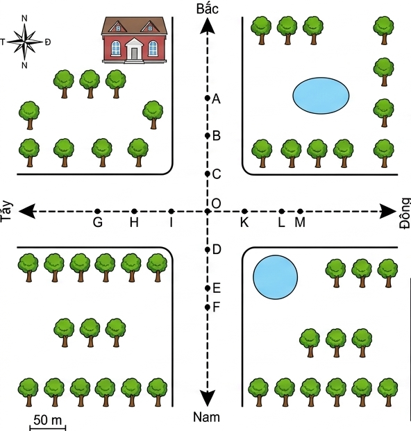
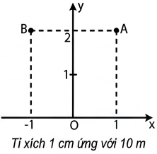
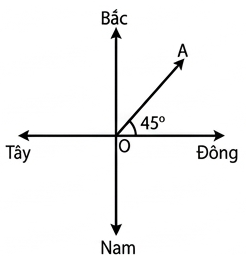
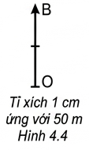
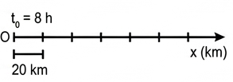
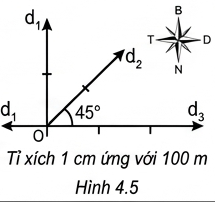
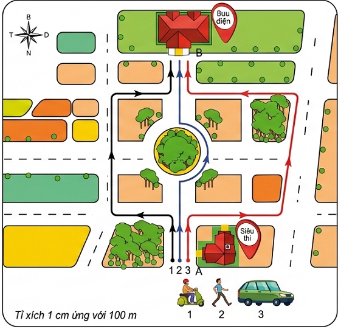
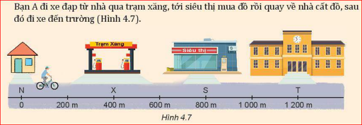
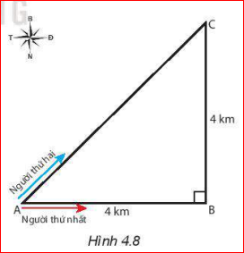

Khi vật chuyển động thì vị trí của vật so với vật được chọn làm mốc thay đổi theo thời gian. Bài toán cơ bản của động học là xác định vị trí của vật tại các thời điểm khác nhau.
Xác định vị trí: Người ta dùng hệ toạ độ vuông góc có gốc là vị trí của vật mốc, trục hoành \(Ox\) và trục tung \(Oy\). Các giá trị trên các trục toạ độ được xác định theo một tỉ lệ xác định.

Hình 4.1. Hệ toạ độ
Ví dụ: Nếu tỉ lệ là \(\frac{1}{1000}\) thì vị trí của điểm A trong Hình 4.1 được xác định trên hệ toạ độ là A \((x=10\text{ m}; y=20\text{ m})\) và của điểm B là B \((x=-10\text{ m}; y=20\text{ m})\).
Trong thực tế, người ta thường chọn hệ toạ độ trùng với hệ toạ độ địa lí (Tây - Đông, Bắc - Nam).

Hệ quy chiếu: Hệ toạ độ kết hợp với mốc thời gian và đồng hồ đo thời gian được gọi là hệ quy chiếu.
* Lưu ý: Khi vật chuyển động trên đường thẳng thì chỉ cần dùng hệ toạ độ có 1 trục \(Ox\) trùng với quỹ đạo chuyển động.
❓ Câu hỏi 1
Hãy dùng bản đồ Việt Nam và hệ toạ độ địa lí, xác định vị trí của thành phố Hải Phòng so với vị trí của Thủ đô Hà Nội.
Chọn gốc toạ độ tại Thủ đô Hà Nội. Thành phố Hải Phòng nằm ở hướng Đông - Nam so với Thủ đô Hà Nội. Khoảng cách đường chim bay ước tính theo tỉ lệ bản đồ (khoảng 100km).
Biết quãng đường đi được chưa đủ để xác định vị trí của vật, ta cần biết thêm hướng của chuyển động.
Định nghĩa: Đại lượng vừa cho biết độ dài vừa cho biết hướng của sự thay đổi vị trí của vật gọi là độ dịch chuyển.
Độ dịch chuyển là một đại lượng vectơ. Được biểu diễn bằng một mũi tên nối vị trí đầu và vị trí cuối của chuyển động, có độ dài tỉ lệ với độ lớn của độ dịch chuyển. Kí hiệu là \(\vec{d}\).

❓ Câu hỏi 2
Xác định vị trí của vật A trên trục \(Ox\) vẽ ở Hình 4.3 tại thời điểm \(11\text{ h}\). Biết vật chuyển động thẳng, mỗi giờ đi được \(40\text{ km}\) và xuất phát lúc \(8\text{ h}\) tại gốc \(O\).

Thời gian di chuyển: \(\Delta t = 11 - 8 = 3\text{ h}\).
Quãng đường đi được: \(s = v \cdot \Delta t = 40 \cdot 3 = 120\text{ km}\).
Vị trí của vật A nằm trên phần dương trục \(Ox\), cách \(O\) một khoảng \(120\text{ km}\) (\(x = 120\text{ km}\)).
❓ Câu hỏi 3
Hãy xác định các độ dịch chuyển mô tả ở Hình 4.5 trong toạ độ địa lí.

Hình 4.6 mô tả người đi xe máy (1), người đi bộ (2), người đi ô tô (3) đều khởi hành từ siêu thị A để đi đến bưu điện B qua các con đường khác nhau.

❓ Hoạt động
1. Cả 3 người đều có điểm đầu A và điểm cuối B giống nhau nên có độ dịch chuyển bằng nhau. Tuy nhiên, quỹ đạo di chuyển khác nhau nên quãng đường đi được khác nhau (\(s_3 > s_1 > s_2\)).
2. Độ lớn của độ dịch chuyển bằng quãng đường đi được khi vật chuyển động trên một đường thẳng và không đổi chiều.
❓ Bài tập minh hoạ
Bạn A đi xe đạp từ nhà qua trạm xăng, tới siêu thị mua đồ rồi quay về nhà cất đồ, sau đó đi xe đến trường (Hình 4.7).

Chọn hệ toạ độ có gốc là vị trí nhà bạn A, trục \(Ox\) trùng với đường đi. Tính \(s\) và \(d\) trong các trường hợp:
| Chuyển động | Quãng đường đi được \(s \text{ (m)}\) | Độ dịch chuyển \(d \text{ (m)}\) |
|---|---|---|
| Từ trạm xăng đến siêu thị | \(s_{xs} = ?\) | \(d_{xs} = ?\) |
| Cả chuyến đi | \(s = ?\) | \(d = ?\) |
Trạm xăng cách nhà \(400\text{ m}\), Siêu thị cách nhà \(800\text{ m}\), Trường cách nhà \(1200\text{ m}\).
Có thể dùng phép cộng vectơ để tổng hợp độ dịch chuyển của vật.
Bài tập ví dụ: Hai người đi xe đạp từ A đến C, người thứ nhất đi từ A đến B, rồi từ B đến C; người thứ hai đi thẳng từ A đến C. Cả hai đều về đích cùng lúc. Tính quãng đường và độ dịch chuyển.

Giải:
❓ Luyện tập tổng hợp
Bài 1:
- Quãng đường: \(s = 6 + 4 + 3 = 13\text{ km}\).
- Độ dịch chuyển: Vẽ hình trên trục toạ độ. Điểm đầu O(0,0). Điểm Tây (-6, 0), đi Nam (-6, -4), đi Đông đến điểm cuối C(-3, -4).
Độ lớn dịch chuyển: \(d = \sqrt{(-3)^2 + (-4)^2} = \sqrt{9+16} = 5\text{ km}\). Hướng Tây Nam.
Bài 2:
Người bơi theo phương ngang tạo độ dịch chuyển \(\vec{d_1}\) độ lớn \(50\text{ m}\). Nước đẩy vuông góc tạo độ dịch chuyển \(\vec{d_2}\) độ lớn \(50\text{ m}\).
Độ dịch chuyển tổng hợp: \(d = \sqrt{50^2 + 50^2} = 50\sqrt{2} \approx 70,7\text{ m}\). Hướng lệch \(45^\circ\) so với phương ngang bờ sông.
Xác định được vị trí của một địa điểm trên bản đồ và tính toán được quãng đường, độ dịch chuyển thực tế của các vật chuyển động trong đời sống.
Bài 1:
Một học sinh đi từ nhà đến trường cách nhau \(2\text{ km}\), sau đó phát hiện quên sách nên quay về nhà. Hãy tính quãng đường và độ lớn dịch chuyển của học sinh này cho cả quá trình từ nhà đến trường rồi về nhà.
- Quãng đường đi được: \(s = 2 \text{ (đi)} + 2 \text{ (về)} = 4\text{ km}\).
- Độ dịch chuyển: Do điểm cuối trùng với điểm xuất phát nên độ lớn dịch chuyển \(d = 0\text{ km}\).
Bài 2:
Một kiến đi dọc theo mép một chiếc bàn hình chữ nhật kích thước \(1\text{ m} \times 1.5\text{ m}\). Nó xuất phát từ góc A, đi qua góc B và dừng lại ở góc C (C đối diện A qua đường chéo). Tính quãng đường và độ lớn dịch chuyển của con kiến.
- Quãng đường đi được (dọc theo 2 cạnh): \(s = AB + BC = 1 + 1.5 = 2.5\text{ m}\).
- Độ dịch chuyển là độ dài đoạn chéo AC: Áp dụng định lý Pytago \(d = AC = \sqrt{1^2 + 1.5^2} = \sqrt{1 + 2.25} = \sqrt{3.25} \approx 1.8\text{ m}\).
Bài 3:
Một máy bay bay thẳng từ thành phố A đến thành phố B cách nhau \(800\text{ km}\) theo hướng Đông. Sau đó máy bay tiếp tục bay thẳng \(600\text{ km}\) theo hướng Nam để đến thành phố C. Tìm quỹ đạo bay (quãng đường) và vectơ dịch chuyển (độ lớn, hướng) của máy bay từ A đến C.
- Quãng đường (quỹ đạo bay): \(s = 800 + 600 = 1400\text{ km}\).
- Độ lớn dịch chuyển (cạnh huyền tam giác vuông): \(d = \sqrt{800^2 + 600^2} = 1000\text{ km}\).
- Hướng của vectơ dịch chuyển: Hướng Đông - Nam.